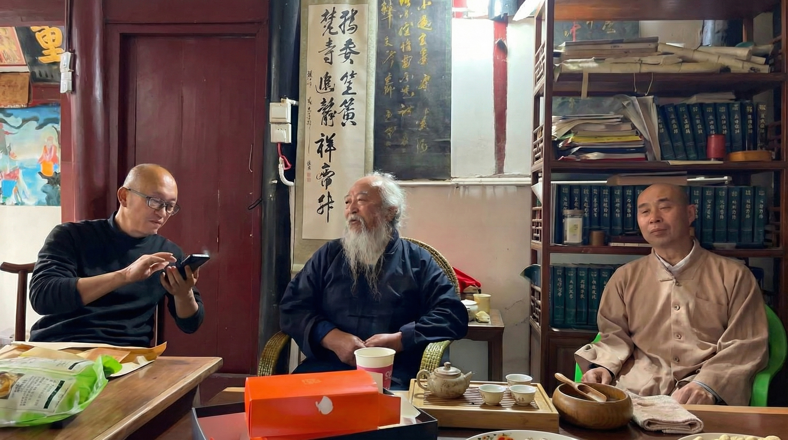
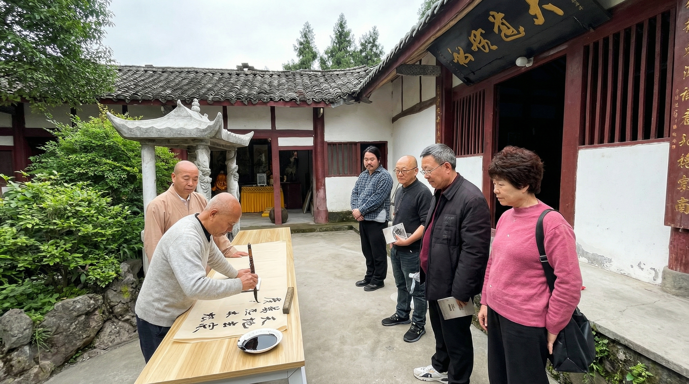
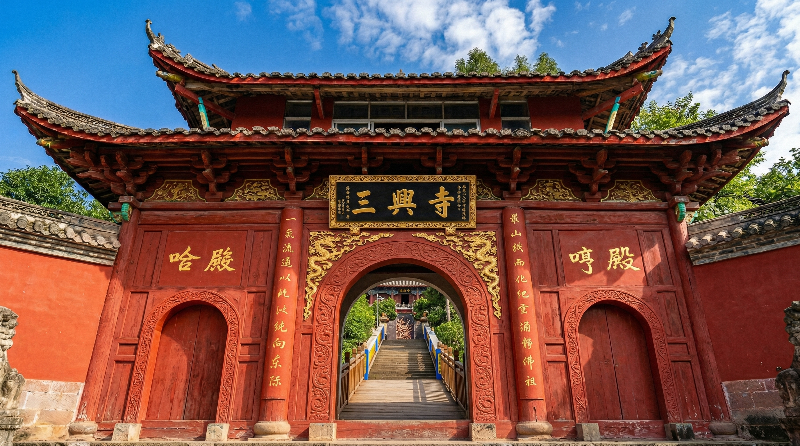
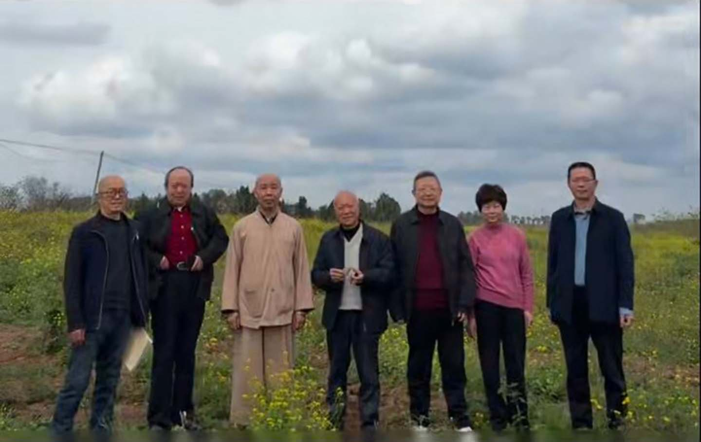

禅风雅韵

茗寮禅园
石案净以无埃，竹帘清而有影。品茗而远世虑；拂尘以明禅心。

古寺人文
碑碣铭镌，兴废分明竹帛。晨钟施法雨，暮鼓献祥云，滋凡尘以康泰。

岐黄医渡
觉心大师笃研岐黄，觅灵草于雾谷，起沉疴于穷乡。禅通草木，医渡仁心。

“历千劫，禅宗长在；逢盛世，佛法重光。”

汤汤涪水之畔，紫气萦回；亘亘盘龙之侧，佛光普照。
巍巍乎其间者，终南山也。毗灵鹫，近凤岭。襟天福之墟，以眺涪水如练；通康家之浦，而俯北坪似棋。众山点黛，万篁浮烟。
基肇南北，源溯李唐。原名巴兴。
历明末兵焚而衰。
经营缮而复，三仙曾栖此修行。
觉心大师重建，更名“三兴”。

石案净以无埃，竹帘清而有影。品茗而远世虑；拂尘以明禅心。

碑碣铭镌，兴废分明竹帛。晨钟施法雨，暮鼓献祥云，滋凡尘以康泰。
觉心大师笃研岐黄，觅灵草于雾谷，起沉疴于穷乡。禅通草木，医渡仁心。